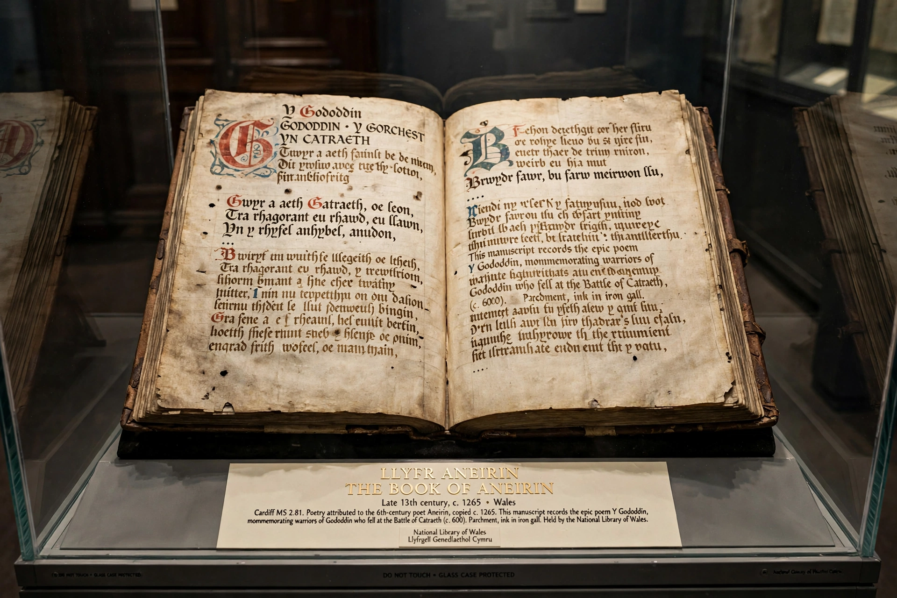

The Book of Aneirin (Welsh: Llyfr Aneirin) is a late 13th-century Welsh manuscript containing Old and Middle Welsh poetry attributed to the 6th-century poet Aneirin, notably Y Gododdin.

Y Gododdin is a series of elegies for warriors of the Gododdin kingdom who fell at the Battle of Catraeth (c. 600, often identified with Catterick). It is among the earliest Welsh literature and contains one of the earliest references to King Arthur as a benchmark of valour.
Written by two scribes, the manuscript is held at Cardiff Central Library / National Library of Wales collections. Its language preserves archaic features studied by scholars of Brittonic languages.